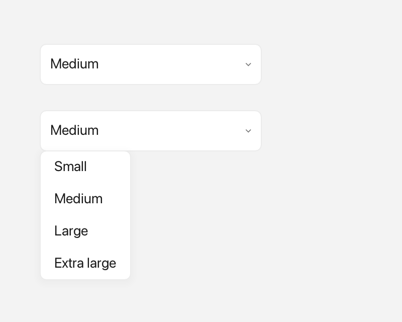

ComboBox
A ComboBox is a dropdown field: it shows one choice at a time, and clicking it opens a short list of options to pick from.

A closed selection and an open dropdown.
What it's for
Use a ComboBox when the user must choose exactly one option from a small,
fixed set and you want to save space. The field shows the current choice, or a
placeholder such as "Pick one…" when nothing is selected, with a small
chevron on the right. Clicking the field (or the chevron) opens a popup list;
picking an option closes it.
If the options should stay visible all the time, or there are many of them, use a ListView instead. If the data has several columns, use a Table.
A first example
Here is a complete program. A window is the operating-system window your app
draws into; Window::open creates one, and if (!win) stops the program if the
window could not be opened. A widget is any visible element inside a window,
and win.add<T>(...) creates one and returns a reference to it. Rect{x, y,
width, height} says where the widget sits and how big it is. A callback is a
small function you hand to a widget so it can call you back when something
happens.
#include <cstdio>
#include <fluffy/fluffy.hpp>
int main() {
fluffy::Window win = fluffy::Window::open("ComboBox demo", 640, 400);
if (!win) return 1;
auto& cb = win.add<fluffy::ComboBox>(fluffy::Rect{40, 40, 240, 32});
cb.setItems({"Apple", "Banana", "Cherry"});
cb.setPlaceholder("Pick one…");
cb.setSelectedIndex(1);
cb.setOnChange([](int idx, const std::string& v) {
std::printf("picked %d:%s\n", idx, v.c_str());
});
win.run();
}
setItems gives the field its options. setPlaceholder sets the text shown
while nothing is selected. setSelectedIndex(1) starts on "Banana": 0 is the
first option, 1 the second, and -1 means no choice. setOnChange registers
a callback that receives the new index and the option text.
The snippets below assume win and cb from this example.
Common tasks
Using rich items
An Inline is rich text built from pieces: plain text, an icon from Icons::*,
and a Color. Use it when plain text is not enough. setItemsInline sets the
options this way, and setting either items or itemsInline updates the other.
cb.setItemsInline({
fluffy::Inline{} << fluffy::Icons::apple << " Apple",
fluffy::Inline{} << fluffy::Color{200, 40, 40, 255} << fluffy::Icons::heart << " Cherry"
});
The placeholder has a rich form too. setPlaceholderInline pairs with
setPlaceholder, and setting one updates the other.
cb.setPlaceholderInline(fluffy::Inline{} << fluffy::Icons::search << " Search");
Reading the current selection
int idx = cb.selectedIndex();
std::string v = cb.selectedValue();
fluffy::Inline inl = cb.selectedInline();
const auto& items = cb.items();
const auto& inlItems = cb.itemsInline();
const std::string& ph = cb.placeholder();
fluffy::Inline phInl = cb.placeholderInline();
selectedIndex and selectedValue give the plain form of the choice, while
selectedInline gives the rich form. The other getters return the option list
and the placeholder.
Opening the popup yourself
cb.openPopup(win);
This shows the dropdown without waiting for a click. You can also disable the
field with setEnabled(false); a disabled field ignores input.
Loading from YAML
Fluffy can also describe widgets in YAML, a plain text format. This entry
creates a ComboBox with the same options as above:
ComboBox:
items: ["Apple", "Banana", "Cherry"]
selected: 1
placeholder: "Pick one…"
x: 40
y: 40
width: 240
selected accepts an index or a string value. value is an alias of
selected, and options is an alias of items. A string that matches no item
is silently ignored.
Good to know
- When focused,
SpaceorEnteropens the popup, andUp/Downmoves through the items.Upat the first item andDownat the last do nothing; the list does not wrap around. onChangefires on a list pick, onUp/Down, or fromsetSelectedIndex(). Re-selecting the same index never fires. Out-of-range input becomes-1, and that fires only if it changes the selection.- The field is focusable and shows an accent border when focused. There is no
focused()getter; usesetFocused()only.
Quick reference
Properties
| Property | Type | Description |
|---|---|---|
items |
vector<string> |
Plain-text options. |
itemsInline |
vector<Inline> |
Rich options (text + Color + Icons::*). Setting one updates the other. |
selectedIndex |
int |
-1 means none, otherwise 0..n-1. |
selectedValue / selectedInline |
string / Inline |
Plain and rich form of the current choice. |
placeholder / placeholderInline |
string / Inline |
Shown when selectedIndex == -1. Setting one updates the other. |
focused |
— | Focusable; shows an accent border when focused (no focused() getter — use setFocused() only). |
Methods
auto& cb = win.add<fluffy::ComboBox>(fluffy::Rect{40, 40, 240, 32});
cb.setItems({"Apple", "Banana", "Cherry"});
cb.setItemsInline({
fluffy::Inline{} << fluffy::Icons::apple << " Apple",
fluffy::Inline{} << fluffy::Color{200, 40, 40, 255} << fluffy::Icons::heart << " Cherry"
});
cb.setPlaceholder("Pick one…");
cb.setPlaceholderInline(fluffy::Inline{} << fluffy::Icons::search << " Search");
cb.setSelectedIndex(1);
int idx = cb.selectedIndex();
std::string v = cb.selectedValue();
fluffy::Inline inl = cb.selectedInline();
const auto& items = cb.items();
const auto& inlItems = cb.itemsInline();
const std::string& ph = cb.placeholder();
fluffy::Inline phInl = cb.placeholderInline();
cb.openPopup(win);
cb.setEnabled(false);
Events
| Event | Signature | When |
|---|---|---|
onChange |
void(int index, const string& value) |
Fires when the selection changes — list pick, Up/Down keys, or setSelectedIndex(). Re-selecting the same index never fires; out-of-range input becomes -1 (fires only if that changes the selection). |
cb.setOnChange([](int idx, const std::string& v) {
std::printf("picked %d:%s\n", idx, v.c_str());
});